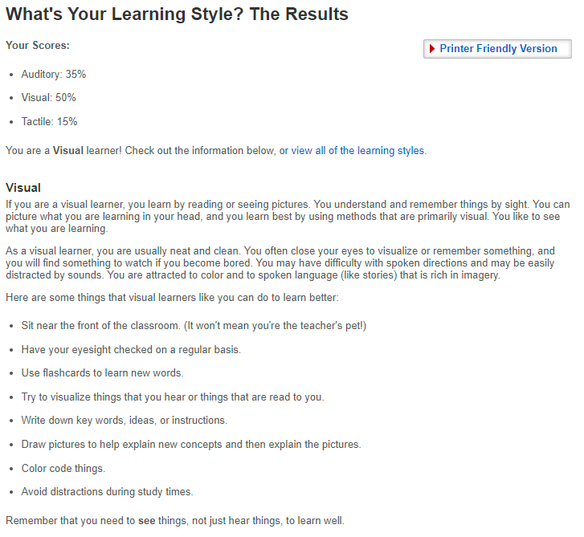

Hi my name is Aaron Moyle, I'm 22 Born in Australia, My Student ID is S3939948, I'm currently Studying at RMIT University
the last Forum of education i had was a Diploma of Interactive Media and Game Design in 2018 before working for my brother in law for his Company Wafflesoft where we started the design on the project "Outback Survival" before i moved my intrests away from game design
and closer towards AI design, though i wouldn't be able to communicate with other AI scientists around the world as i can only speak one language Fluently despite going around the world And would probably need an Interpreter aha.

A phone app to connect the Disabled to local social workers using a profiling database

Q1.What is your Intrest in IT? When did your intrest in IT start? was there any particular event or person that sparked your intrest?
A1.I personally believe i had always had an interest in IT but my brother in law sparked that interest futher the more he studied different core subjects that surrounded Technology and different types of languages of code
Q2.Why did you choose to come to RMIT?
A2.I choose RMIT because it seemed to have a good review on its IT/Programming courses and i wanted to get the best sort of Education i could get to help me get to where i want to be in life
Q3.What do you expect to learn during your studies
A3. all the fundermentals to prepare me for the work force and give me the ability to understand Basic if not complex code by the end of my full course

.Strength:– Protagonists have strong opinions, but they’re far from closed-minded This makes the Protagonist very Reliable when it comes to getting projects done or wishes seen through,
Protaganists are very passionate about the work they do and the effort they put in, They're far from being a boiring do-gooder, these types of people take great pleasure in pursuing their hobbies -
whether thats hiking, cooking, programming, horticulture or someone elses task. as a result they rarely find themselves at a loss for something interesting to do, Protaganists are Very charismatic, often finding away
to brighten up peoples spirits and take on a leadership role whether captian of a soccer team or leader on the world stage they rarely lose sight of their main goal.
Weaknesses:- Many protagonists put pressure on themselves to right every wrong that they encounter no matter how small or unrealisitc the problem is thats causing them to put this preassure on themselves
sometime this preassure can be caused by Overly Idealistic goals which at times can cause conflict when their fundamental principles feel violated Sometimes protagonists can be Intense to be around, trying to push others
to make changes that they might not be ready for, Protagonists are also Overly empathetic meaning that they have a tendency to take on other people's problems as their own.


.Receptive, Reliable, Passionate, Altruistic, Charismatic

Donec eget ex magna. Interdum et malesuada fames ac ante ipsum primis in faucibus. Pellentesque venenatis dolor imperdiet dolor mattis sagittis magna etiam.